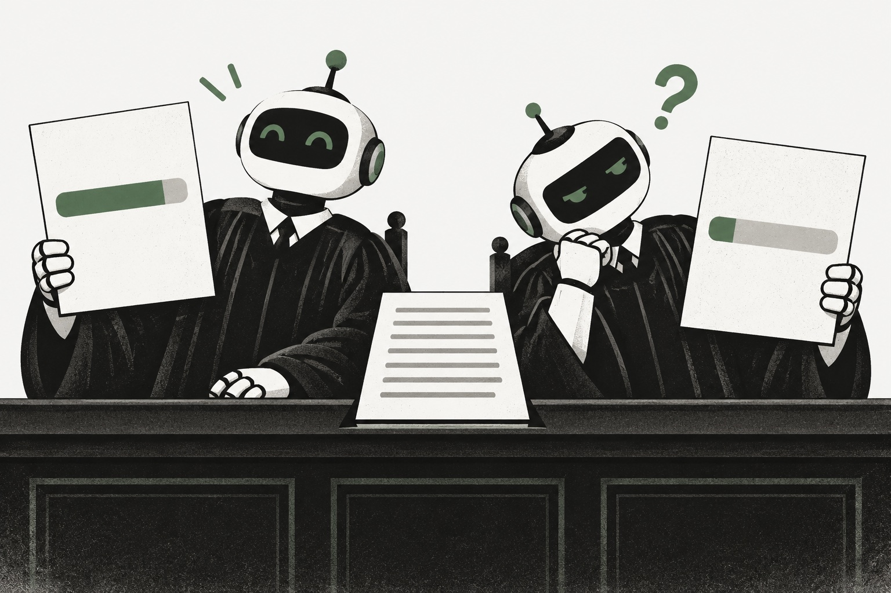

01 · Published research · LLM evaluation
When two LLM judges disagreed
The same essay. Two judges. Different scores. I examined whether those ratings held up across repeated runs, and where reliability differed between models.
150 essays · 2 models × 5 runsView project ↗